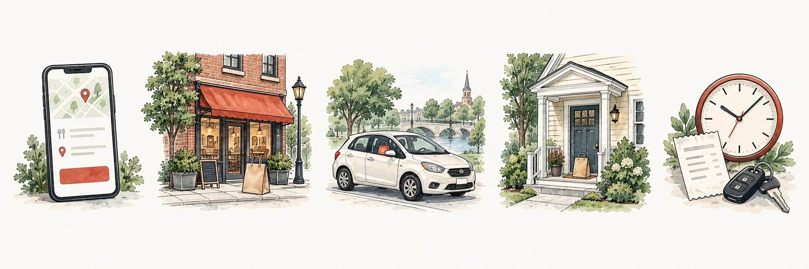
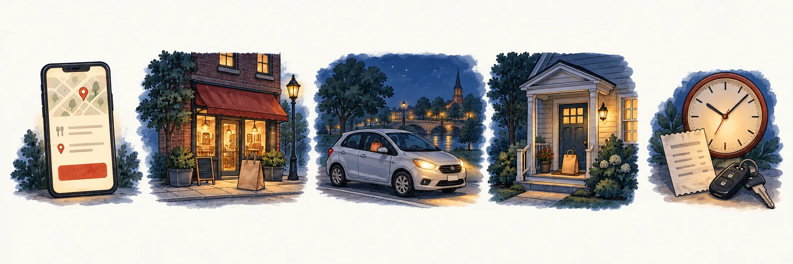
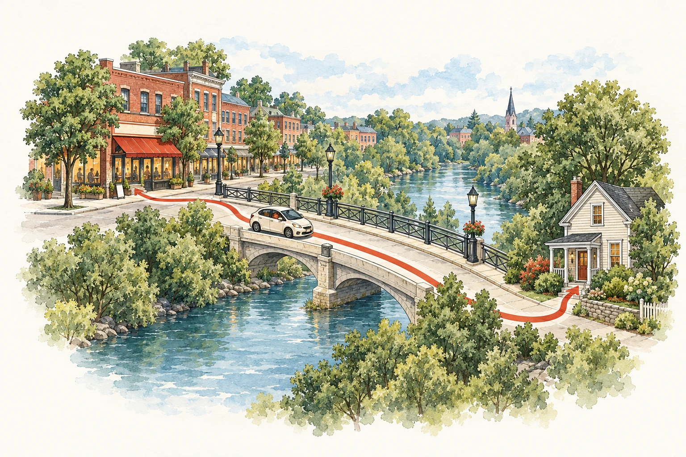

1
5:00pm
Open the app
Check the pay, miles, and drop-off point before you accept.
Your first offer should come in about 8 minutes.
Local Fifty is a free guide to food delivery work in Waltham. See what you would really keep, which app to try first, and when to drive.
Waltham estimate

One hour with DoorDash, Uber Eats and Grubhub on a Friday or Saturday dinner shift, 5–9 pm, in Waltham, waiting included. Accept one order at a time and pause the other apps while you deliver.
Your combined app pay, including tips and waiting time.
Solo (driver earnings app) ↗This is DoorDash, Uber Eats and Grubhub on at once, on a Friday or Saturday dinner shift, 5 to 9 pm, per hour logged in, waiting included. You take one order at a time and pause the other apps while you deliver. It pays about $16.99 before costs. Take off $2.74 for gas and $1.27 for taxes. Taxes are low because you can deduct 72.5 cents for each work mile. DoorDash alone keeps about $11.39. Across all hours of the week, the three apps keep about $11 an hour. 3 Boston-area drivers who counted waiting time report $8 to $13 an hour on one app, before costs. In your first weeks, expect less. This is our estimate, built from app pay in 85 U.S. metros and local shift logs. No one has measured Waltham yet.
Gas only. Repairs, insurance and wear cost extra.
Money set aside for taxes after the mileage deduction. Your actual taxes may differ.
What you keep after gas and tax money, before repairs, insurance and wear.
$51.92 for your whole shift
This is simple math, not a pay forecast or a tax estimate.
Starting numbers: $16.99 pay, $2.74 gas and $1.27 for taxes per hour, with DoorDash, Uber Eats and Grubhub on a weekend dinner shift, waiting included (our Waltham estimate). About 17.6 miles an hour at 28 mpg and $4.36 a gallon. Taxes: 30% of pay minus 72.5 cents a mile. 4 hours. Repairs and tires add about $1.94 an hour. No Waltham earnings have been measured yet.
A Saturday evening with DoorDash, Uber Eats and Grubhub. 4 hours. 7 deliveries. About $68 pay. About $11 gas. About $56 after gas. About $5 goes to taxes, after the mileage deduction. A built example from our Waltham estimate, waiting included.
Times are an example, not a forecast. One order is shown. The example has about 7 in 4 hours.
4 hours: about 7 deliveries, about $68 pay, and about $52 kept after gas and taxes.
After gas and taxes
One delivery takes about 27 minutes, from accepting the offer to the drop-off. Times are our Waltham estimate for a Saturday with DoorDash, Uber Eats and Grubhub, rounded to 5 minutes.


5:00pm
Check the pay, miles, and drop-off point before you accept.
Your first offer should come in about 8 minutes.
5:10pm
Find a legal place to park. Check the name on the order.
5:20pm
Check the route. Count the miles and the drive back.
5:30pm
Follow the drop-off notes. Confirm the delivery in the app.
5:35pm
The time between one drop-off and your next order. You are not paid while you wait. With DoorDash, Uber Eats and Grubhub, it averages about 10 minutes across the week in Waltham, and about 8 on a Friday or Saturday dinner shift. That can be a little longer than one app, because you skip low-paying offers; each order pays more. Late nights and weekday mornings are slower.
5:40pm – 9:00pm
7 deliveries in 4 hours, counting the first one.
Want to stay near Waltham? Check each drop-off before you accept. A nearby pickup can still lead to a long trip.
Use this list to get ready. Confirm the current rules with your chosen app.
0 / 6 items checked
Any car or scooter. Bikes in some cities.
Read official requirements ↗A car, motorcycle, scooter, or bike. Allowed types depend on the town.
Read official requirements ↗Any 2-door or 4-door car, scooter, or bike. Age 19 for a car or scooter, 18 for a bike.
Read official requirements ↗Compare the same things: restaurants on each app in Waltham, and pay after costs.
It has 134 Waltham restaurants, the most by far. It also has the highest estimated pay per hour. Add Grubhub second. Counts made Oct 2026.
On a weekend dinner shift. Shorter waits are why DoorDash keeps the most per hour. Our estimate, not yet measured in Waltham.
Running a second app? Add Grubhub. With DoorDash, that keeps about $12.53 an hour on a weekend dinner shift.
Links go directly to the apps. No referral codes are used. Restaurant counts were made in Oct 2026. Pay figures are our Waltham estimate per hour logged in on a weekend dinner shift, waiting included. Not yet measured in Waltham.
Yes, you can keep two or three apps on. Take the first good offer, then pause the other apps while you deliver. Pick your apps to see what an hour earns you in Waltham.
+$1.59 an hour compared with DoorDash alone
per delivery, before gas and taxes
per delivery, before gas and taxes
These are model estimates, not guaranteed offers.
Take offers that pay at least about $7.75 for a typical order, about $1.95 a mile. Skip the rest; another offer comes soon.
Mount your phone. Massachusetts bans using apps while driving, even at a red light. Pull out of traffic to accept an offer.
From whichever app sends it. Skip offers below your line; another one comes soon.
So it doesn't send offers while you deliver. DoorDash: Pause orders. Uber Eats: Go offline. Grubhub: Pause, once you've been online 2 hours. Going unavailable often during a Grubhub block can cost you future blocks.
Then wait for the next good offer from any app.
Perks depend on how many offers you accept. Uber Eats Pro needs 30% for Gold and 50% for Platinum. DoorDash's reward tiers and Grubhub's levels also count it. Those perks include first pick of better-paying orders, so skipping more offers can cost you them.
DoorDash's Earn by Time mode allows one declined offer an hour; a second ends that mode for the dash. It doesn't fit with skipping offers on two apps.
Each app may send you a tax form. Count each mile once for the 72.5-cent deduction.
All three apps let you work for other apps at the same time. Each one requires on-time delivery, so take only offers you can deliver on time.
If you add an order from another app to your current trip, it needs to be from the same area and going the same way. In our estimate that works for about 16% of orders and adds about $1.16 an hour.
Food arrives later, which can cost tips and ratings. All three apps require on-time delivery, and late deliveries can cost you your account. Uber advises against holding orders from two apps at once. We do not suggest it for new drivers.
We start from each app's pay and waits in Waltham (the app cards above). Offers from different apps arrive separately. With more apps, the next good offer comes sooner, so you can skip poor ones. We assume you still catch most offers, lose about a minute per order pausing apps, and take an offer when it pays at least your usual rate for its time. In New York City, more than half of delivery workers used more than one app, and drivers accepted about 1 in 3 offers (city data, 2021). This is our estimate, not yet measured in Waltham. One driver in central Massachusetts reported about $23 an hour before costs running DoorDash and Uber Eats; our weekend dinner estimate for that pair is about $15 before costs.
About 1.7 deliveries an hour, about $10.06 each
About 8 minutes between orders
$11.52 – $14.82
When you drive matters. Best pay: Friday and Saturday, 5 pm–9 pm, about $11 an hour.
About 99 to 112 restaurants open. The most choice.
Fewer open. About 69 at 9 pm and 32 at 10 pm.
Few open. About 39 at 9 am and 58 at 10 am.
Each square is 3 hours. Darker means more restaurants open.
These are open restaurants, not orders. We have not measured orders yet.
When you drive matters. Best pay: Friday and Saturday, 5 pm–9 pm, about $13 an hour with DoorDash, Uber Eats and Grubhub.
Each bar is our Waltham estimate with DoorDash, Uber Eats and Grubhub on at once: pay per hour logged in, after gas and taxes. It starts from which restaurants are open each hour in Waltham and when people order, with 6 pm the busiest. With more apps you get more offers, so you can skip low-paying ones and, at quiet times, wait less. Friday and Saturday dinner match our estimate for these apps. The shape between meals is partly our assumption; we are recording real Waltham delivery times to replace it. These are estimates, not measured orders.
Estimated pay by hour with DoorDash, Uber Eats and Grubhub, after gas and taxes
Estimated pay by hour with DoorDash, Uber Eats and Grubhub, after gas and taxes
Estimated pay by hour with DoorDash, Uber Eats and Grubhub, after gas and taxes
Tap again to remove an hour.
0 hours a week
About 0 deliveries a week
75 of 144 restaurants on the apps are in two areas: Moody Street and Main Street & the Common. Choose an area below.
 Charles River
Charles RiverChoose a numbered area
43 of 144 restaurants on the apps. The biggest pickup area.
Counted Oct 2026 · order volume not measuredCounted in Waltham, Oct 2026Map: OpenStreetMap. Highlighted areas and restaurant counts: our area guide.
© OpenStreetMap contributorsPick a goal. Then change the numbers to match your week.
Time to reach your goal
About 3 monthsAbout $156 a week kept, about 20 deliveries
If you wait a lot between orders, it can take longer: 4 to 8 months, based on 3 Boston-area drivers’ own reports.
Uses $12.98 kept an hour after gas and taxes with DoorDash, Uber Eats and Grubhub (our Waltham estimate for a weekend dinner shift, waiting included). Weeks are 4.33 a month.
Positive
No matter where you are in Eastern MA, you usually end up with at least $25 hourly.North Shore and Malden area, north of Boston · 2026-07-28
A side-gig DoorDash driver north of Boston says eastern Massachusetts pays well. They never saw an order under $4.50, and it paid far more than a test run in Georgia.
Read the original post · Reddit r/doordash ↗Positive
It’s fun man, riding the scooter around Boston all day, listening to music. It’s more fun than any other job I can think of.Boston, Back Bay (Boylston Street) · 2025-09-25
A teenage scooter courier made $115 in four hours, which he called a light day. He usually skips orders more than two miles away.
Read the original post · BINJ (Boston Institute for Nonprofit Journalism) ↗Positive
Today has been a good day.Boston, Back Bay (Boylston Street) · 2025-09-25
A moped courier showed $315.32 in the DoorDash app after 13 hours, about $24 an hour. He expected $1,300 to $1,500 for the week.
Read the original post · BINJ (Boston Institute for Nonprofit Journalism) ↗Positive
generally ill say im doing $20/$25/h before expensesBoston · 2025-05-03
A DoorDash driver spends whole days in Boston on the pay-by-time mode. That mode pays while stuck in traffic. The figure is before gas and car costs.
Read the original post · Reddit r/doordash_drivers ↗Positive
I make 270-330 for every 30 USD I fill up petrolBoston and Cambridge (Boston Central, Brookline, Cambridge zones) · 2024-06-24
A Cambridge driver with about 2,200 DoorDash deliveries works 3 to 4 hour evenings. Most orders are 1 to 2 miles and pay $7 to $8. No hours were given, so no hourly rate.
Read the original post · Reddit r/doordash_drivers ↗Positive
I do EBT in suburban Mass. Been a lot more profitable than EBO for me, personally.Suburban Massachusetts · 2024-01-03
A suburban Massachusetts DoorDash driver says the pay-by-time mode beats pay-per-offer for them. They gave no dollar figures.
Read the original post · Reddit r/doordash_drivers ↗Neutral
So I work like 12 hours daily. This is my second jobBoston · 2026-04-07
A Grubhub courier rides a moped six hours a day, seven days a week, after his main job. He relies on the extra money and said a moped ban would hurt him.
Read the original post · CBS News Boston (WBZ-TV) ↗Negative
I spent the vast majority of my night sitting in my car or driving to hotspots to try to get orders.A Boston-area city of about 65,000 with colleges and many hotels (not named) · 2025-05-09
On a first night, a new DoorDash driver made $28.25 from 4 orders in 3.5 hours, counting waits. A reply said that Thursday was slow for many drivers.
Read the original post · Reddit r/doordash_drivers ↗Negative
I sometimes literally go hours at a time without even a single offer.Boston MetroWest · 2024-01-03
A MetroWest driver, the closest area to Waltham in this set, runs three apps. Grubhub used to pay them the most and is now a distant third. This was early January, a slow time.
Read the original post · Reddit r/grubhubdrivers ↗